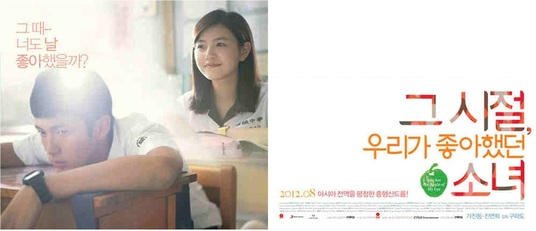

10 "NEW" Favorite Asian Teen Movies
12/16/2017
Here’s a NEW list of my favorite teen romantic films from Asian countries such as Korea, Thailand, Taiwan and Japan (well mostly from Japan)
I already made a previous list of my 10 Favorite Asian Teen Romantic Movies but this one consists of “NEW MOVIES” (latest movies released from 2015 up to present).
TOP 10
1. Our Times (2015,Taiwan)

Synopsis: It follows Truly, an ordinary schoolgirl, on her senior year as she teams up with TaiYu, the school's notorious gang leader, to break apart growing love between rivals Ouyang, the school's most popular male student, and Minmin, the school's most popular girl. [source:IMDB]
Stars: Vivian Sung, Darren Wang, Dino Lee, Joe Chen, Jerry Yan
Tags: FIRST LOVE, HIGH SCHOOL, NOSTALGIA, ROMANCE, COMEDY, DRAMA
For more details click More
1. Our Times (2015,Taiwan)
Synopsis: It follows Truly, an ordinary schoolgirl, on her senior year as she teams up with TaiYu, the school's notorious gang leader, to break apart growing love between rivals Ouyang, the school's most popular male student, and Minmin, the school's most popular girl. [source:IMDB]
Stars: Vivian Sung, Darren Wang, Dino Lee, Joe Chen, Jerry Yan
Tags: FIRST LOVE, HIGH SCHOOL, NOSTALGIA, ROMANCE, COMEDY, DRAMA
For more details click More
3. Crazy Little Thing Called Love (2010,Thailand)

Synopsis: Nam is talented and funny, but with plain looks. She falls in love with the older Shone, one of the best-looking guys in school. [source: IMDB]
Stars: Pimchanok Leuwisetpaiboon, Mario Maurer, Tangi Namonto
Tags: FIRST LOVE, HIGH SCHOOL, FRIENDSHIP, ROMANCE, COMEDY, DRAMA
For more details click More
4. My Sassy Girl (2001,Korea)
Synopsis: It describes the meeting of Kyun-woo (Cha) and an unnamed girl. Kyun-woo is shamed into assisting the girl because the other passengers mistakenly think she is his girlfriend. Once he helps her, Kyun-woo develops a deep sense of responsibility for her which enables him to tolerate (somehow) the girl's abuses. [source: IMDB]
Stars: Cha Tae-hyun, Jun Ji-hyun
Stars: Cha Tae-hyun, Jun Ji-hyun
For more details click More
5. You Are The Apple of My Eye (2011,Taiwan)
Synopsis: A Taiwanese romance film about Ko Ching-teng, a prankster and a mischievous student who eventually becomes a writer, and Shen Chia-yi, an honor student who is very popular amongst the boys in her class. [source:Wikipedia]
Stars: Ko Chen-tung, Michelle Chen
ags: FIRST LOVE, HIGH SCHOOL, FRIENDSHIP, ROMANCE, COMEDY, DRAMA
For more details click More